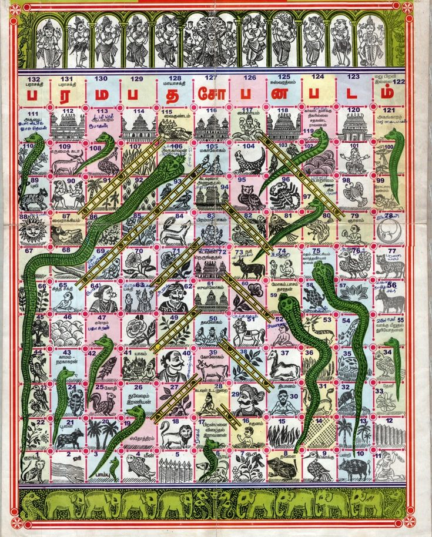

The Divine Origins
While the game’s roots are whispered to reach back to the 2nd century BC, its most profound iteration is attributed to the 13th-century Marathi saint and poet Sant Dnyaneshwar. Known then as Mokshapat, the game was never intended for mere leisure. It was designed as a "map of the soul," a pedagogical tool to teach the Hindu philosophy of Dharma (virtue) and Adharma (vice). Every roll of the die represents the karma of a soul's journey toward enlightenment.
The Architecture of Fate
The traditional board is a visual metaphor for the human condition. In its original form, the board featured significantly more snakes than ladders—a stark reminder that the path to righteousness is narrow, while the pitfalls of vice are everywhere.
| Path Component | Philosophical Meaning |
|---|---|
| The Ladders (Virtues) | Representing good deeds like Faith (12), Reliability (51), and Generosity (57). |
| The Snakes (Vices) | Representing sins like Disobedience (41), Theft (52), and Anger (84). |
| The Goal (100) | Representing Moksha (Salvation) or the abode of Lord Vishnu. |
Evolution Across Borders
As the game traveled, it adapted to the local spirit:
- Gyanbazi: The Jain variant, focusing on spiritual enlightenment.
- Vaikuntha Ekadashi: In Tamil Nadu, the game is a ritual vigil, played all night to symbolize a spiritual journey.
- Snakes & Ladders (1892): The British variant, which stripped the religious symbolism to create a balanced recreational race.
